Adversarial
Examples
A tiny, invisible nudge that fools a model
Albert No · Yonsei University
Trustworthy AI · 2026
Contents
The Phenomenon
An invisible nudge flips the answer
Models Look Confident
A good classifier is accurate and sure of itself.
- 99% accuracy on held-out test images
- High confidence on each prediction
- Looks ready to ship
Then a single crafted input breaks it.
The Panda That Became a Gibbon
Add a faint, invisible pattern to a panda photo.
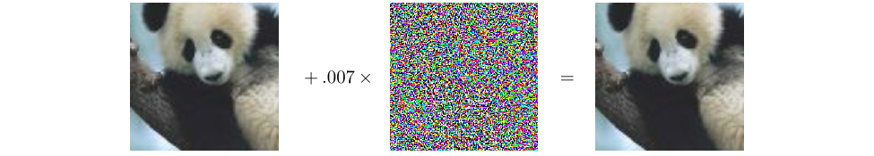
To your eye: the same panda. To the model: a gibbon, 99.3% sure.
Anatomy of the Trick
Three pieces: the original, the nudge, the result.
57.7% panda
99.3% gibbon
The nudge is tuned, not random noise.
Intriguing Properties
The first paper called these "intriguing properties".
- Every accurate network seemed to have them
- The same nudge often fooled other models
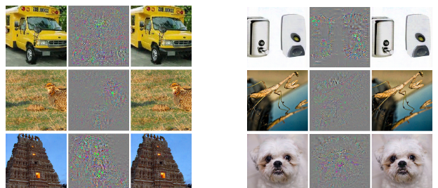
Not a Rare Bug
Adversarial examples are not a fluke of one model.
- Images, audio, and text are all affected
- They appear across architectures
- They survive many training tricks
A property of how these models carve up space.
Why It Matters
If an attacker controls the input, they control the prediction.
Self-driving cars, spam filters, face unlock, content moderation: all read attacker-influenced inputs.
A Picture in Your Head
The classifier draws a boundary between classes.
The image starts safe, near the line. A tiny push crosses it.
Close to the Edge
In high dimensions, every point sits near a boundary.
- Thousands of pixels, each a direction to push
- Small change per pixel, large change overall
Dimensions add up: many tiny pushes become one shove.
Why? Too Linear Inside
One explanation: deep nets behave too linearly.
- Each pixel's nudge adds a small push to the output
- Thousands of aligned pushes sum to a big shift
- Explains why one gradient step already fools models
Not exotic curvature: plain linearity, in very high dimension.
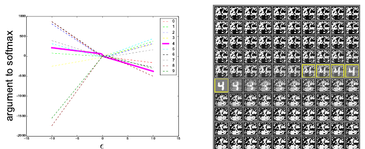
Why? Features, Not Bugs
A second view: models use patterns we cannot see.
- Data holds faint patterns that truly predict the label
- Models lean on them; humans never notice them
- The attack flips those hidden patterns, not the panda
Also explains transfer: different models learn the same hidden patterns.
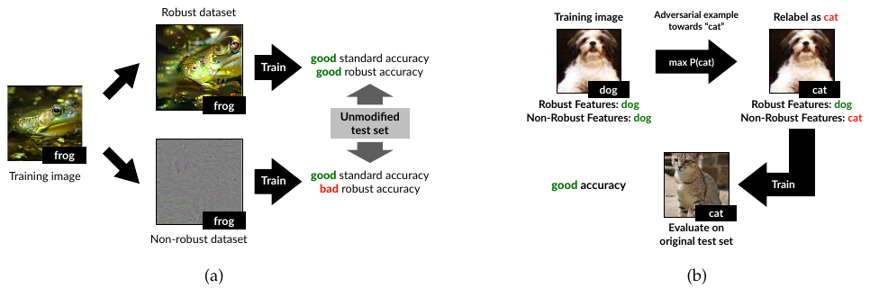
The Threat Model
What the attacker may change
Spell Out the Rules
A threat model fixes what the attacker can do.
- How much can they change the input?
- What do they know about the model?
- What is their goal?
No threat model, no meaningful claim of safety.
The Perturbation Budget
Start from a real input $x$. Add a change $\delta$.
The budget
The change must stay small, capped by $\varepsilon$:
Small $\varepsilon$ keeps $x_{\text{adv}}$ visually identical to $x$.
How to Measure "Small"
"Small" needs a ruler. Two common ones.
$L_\infty$
Cap the largest single pixel change. Every pixel nudged a little.
$L_2$
Cap the total energy of the change. A few pixels nudged more.
Different rulers, different-looking attacks.
The Allowed Region
The budget $\|\delta\| \le \varepsilon$ draws a small ball around $x$.
The attack searches this region for a mistake.
White Box vs Black Box
White box
Attacker sees everything: weights, gradients. The worst case.
Black box
Attacker only queries the model and reads outputs.
We test defenses in the white-box worst case.
Transferability
An attack built on one model often fools another.
my model
secret model
So a black-box attacker can train a copy, then transfer.
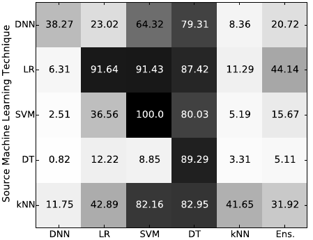
Why Transfer Is Scary
You do not need access to a model to attack it.
- Substitute models fooled commercial classifiers: Amazon 96%, Google 89%
- Built with only about 800 queries to the target
Hidden weights are not a defense. A look-alike model is enough.
The Attacks
Follow the gradient to the edge
The Core Idea
Training asks: which way lowers the loss?
An attack asks the opposite: which way raises the loss?
The gradient points uphill. Step that way, the prediction breaks.
The Gradient Sign
The gradient says, per pixel, which direction hurts.
- Positive: brighten this pixel to fool the model
- Negative: darken this pixel instead
- Keep only the sign, push each pixel by $\varepsilon$
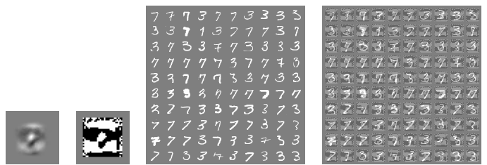
Every pixel moves the maximum allowed amount.
FGSM: One Step
FGSM (Fast Gradient Sign Method): a single move.
- Read the gradient: which way hurts, per pixel
- Keep only its sign, push each pixel by $\varepsilon$
- One gradient, one step, done
Nudge every pixel the way that hurts the model. Fast and cheap.
FGSM by Hand
Demo
Pixel value $0.40$, budget $\varepsilon = 0.03$. Gradient sign is $+1$.
Every pixel shifts by $0.03$. The cat now reads as a dog.
A change of 0.03 on a 0-to-1 scale is invisible to you.
One Step Is Weak
FGSM is fast, but it takes one blind leap.
- The loss surface curves
- One straight step can overshoot or fall short
A careful attacker takes many small steps instead.
PGD: Iterate
PGD (Projected Gradient Descent) repeats the gradient step.
- Take a small gradient-sign step
- Project back into the budget if you drifted out
- Repeat for many small steps
Many careful steps instead of one blind leap.
Steps Inside the Ball
PGD walks toward the boundary, staying inside the budget.
Small steps, each projected back, find the weak spot.
PGD Is the Benchmark
PGD became the standard strong attack.
- Reliable, simple to run
- Used to stress-test defenses
- If you beat PGD, you have a claim worth checking
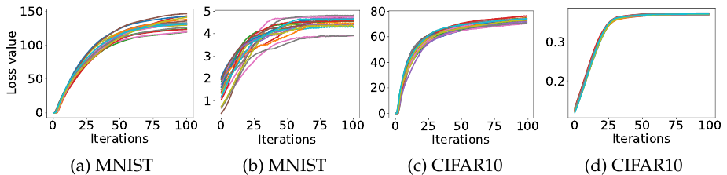
The yardstick for "is this defense real?"
The Carlini-Wagner Attack
A stronger attack: find the smallest possible nudge.
- Optimize for an imperceptible change
- Broke many defenses that PGD missed
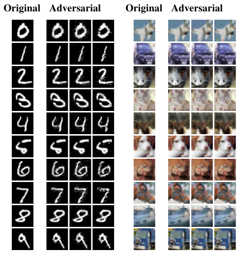
Targeted vs Untargeted
Untargeted
Make it wrong, any wrong label will do.
Targeted
Make it say a chosen label: "stop" reads as "go".
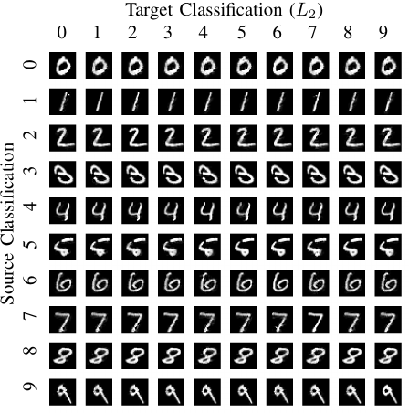
Targeted is harder, and more dangerous.
The Defenses
Training tougher, proving safety
The Defender's Goal
Stay correct everywhere inside the budget.
Robustness
For every $\delta$ with $\|\delta\| \le \varepsilon$, the model still predicts the true label of $x$.
Not just correct on $x$, but on its whole neighborhood.
The Robustness Radius
How far can you push $x$ before the answer flips?
A larger guaranteed radius means a more robust model.
Adversarial Training
The de-facto defense: train on the attacks.
- For each batch, craft a PGD attack.
- Train on the attacked images, true labels.
- Repeat, so the model learns to resist.
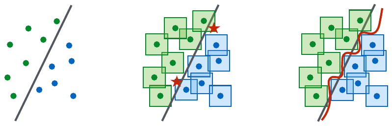
It Actually Works
Adversarial training is the one defense that held up.
- Survived years of stronger attacks
- Still the baseline everyone compares against
Rare in this field: a defense that lasts.
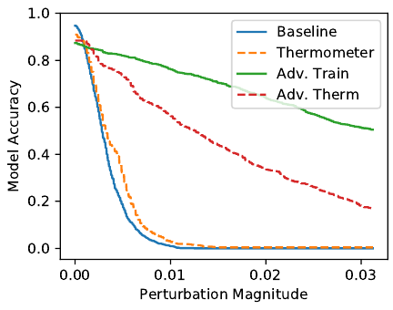
The Cost
Robustness is expensive.
- Each step crafts an attack: much slower training
- Clean accuracy usually drops
- Needs bigger models and more data
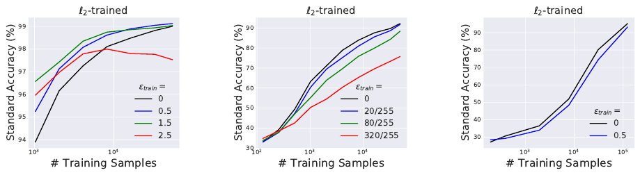
And the bill is not only compute: clean accuracy pays too.
Robustness vs Accuracy
The tension may be intrinsic, not an engineering bug.
- Robust models must ignore fragile-but-predictive patterns
- Ignoring useful signal costs clean accuracy
- Upside: robust models attend to features humans find salient
Echoes "features, not bugs": give up the brittle features, pay in accuracy.
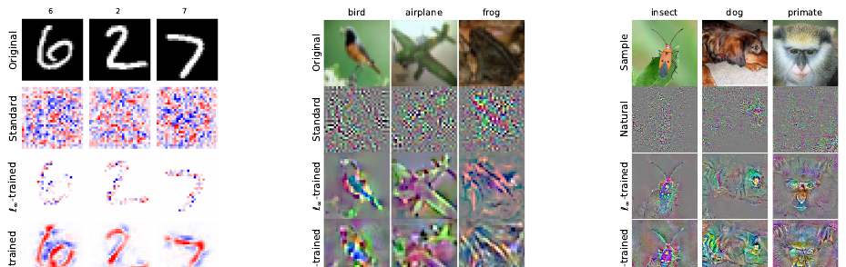
Empirical vs Certified
Empirical
"No attack we tried broke it." Could break tomorrow.
Certified
A proof: no attack inside the budget can ever win.
A proof beats a track record.
Certified Robustness
Can we guarantee a safe radius around $x$?
The promise
Within radius $r$, the prediction is provably constant. No nudge that small can flip it.
A guarantee against any attack, not just the ones we ran.
Randomized Smoothing
One route to a certificate: vote under noise.
- Add random noise to the input, many times.
- Classify each noisy copy.
- Take the majority vote as the answer.
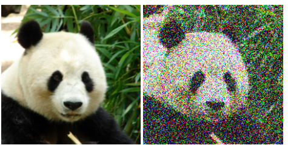
Why Voting Certifies
A small nudge barely shifts the cloud of noisy copies.
- The majority answer stays the same
- How much it can shift gives a provable radius
Noise smooths the boundary into something you can prove about.
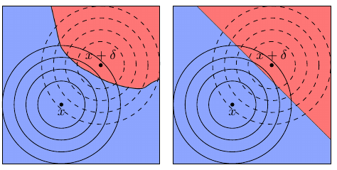
The Certified Catch
Certificates are real but modest.
- The guaranteed radius is often small
- Many noisy queries per prediction: slow
- Hard to scale to large, high-resolution inputs
A proof, but a narrow and costly one.
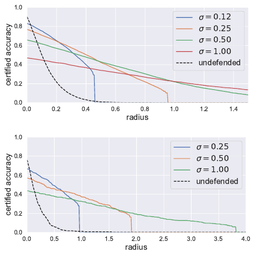
The Arms Race
Defenses break under stronger attacks
A Recurring Story
The cycle repeats almost every year.
Most "solved" claims did not survive contact.
Obfuscated Gradients
Many defenses just hid the gradient.
- The attack could not find a direction to push
- It looked safe, but the model was unchanged
A False Sense of Security
Hiding the gradient hides the attack, not the weakness.
One team examined 9 defenses from a single conference (ICLR 2018).
- 7 of the 9 relied on obfuscated gradients
- Recovering the gradient broke 6 completely, 1 partially
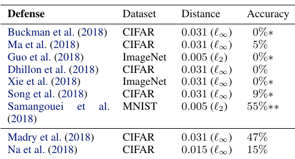
Adaptive Attacks
The right test: an attacker who knows your defense.
- Tailor the attack to that exact mechanism
- Not a fixed, off-the-shelf attack
- Most defenses fall once the attack adapts
Evaluate against your strongest adversary, not your weakest.
How to Test Honestly
A short checklist for any robustness claim.
- Use a strong, adaptive attack
- Report the white-box worst case
- Prefer a certificate over a track record
Skepticism is the discipline of this field.
The Scoreboard: RobustBench
A public leaderboard scores every defense with one standard strong attack (AutoAttack).
- Standard CIFAR-10 model: 94.8% clean, 0.0% robust
- Best defense so far: 93.7% clean, 73.7% robust
- A decade of work, and a 20-point gap remains
Progress is real. Solved, it is not.
Physical & Beyond
Stickers, natural shift, multimodal attacks
Off the Screen
Attacks escape the digital image into the real world.
- Printed patterns the camera will see
- Must survive angle, distance, and lighting
A perturbation you can stick on a wall.
The Stop-Sign Attack
A few stickers on a stop sign change the reading.
- Looks like ordinary graffiti to a human
- The classifier reads "Speed Limit 45"
- Fooled in 100% of lab photos, 84.8% of drive-by frames
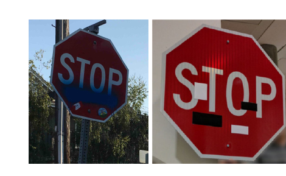
Adversarial Glasses
Printed eyeglass frames that fool face recognition.
- Dodge: wearers evaded recognition 80%+ of the time
- Impersonate: one wearer passed as a celebrity 87.9% of the time
- Just a colorful pattern on an ordinary frame
Wearable, inconspicuous, effective.
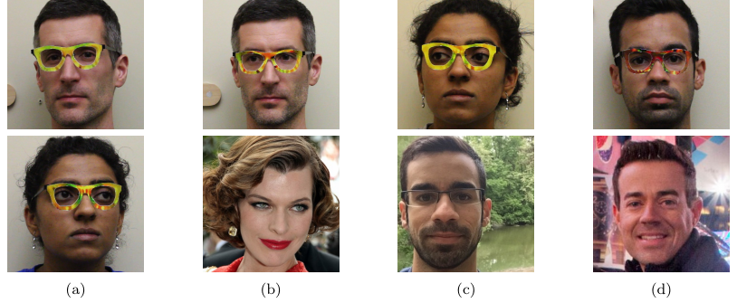
Adversarial Patches
A printed patch that hijacks attention anywhere it appears.
- Works in any scene, at any position
- The model fixates on the patch, reports the attacker's class
- A held patch can hide a person from a detector
Not a hidden pixel pattern: a visible, printable object.
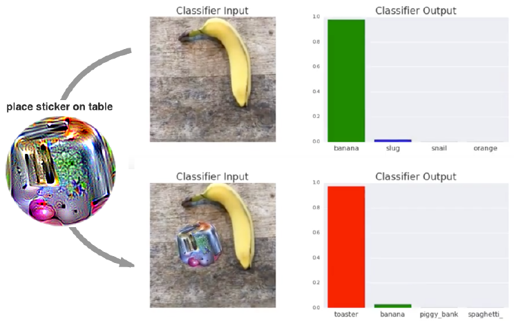
Beyond Vision
The same idea reaches other inputs.
- Audio: a waveform 99.9% identical transcribes as any chosen phrase
- Text: a few rewritten words flip a classifier
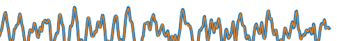
Wherever a model reads input, a nudge can mislead it.
Attacking Multimodal Models
Modern assistants read images and text together.
- One crafted image can jailbreak an aligned chat model
- The same image unlocks many harmful requests, not one
- Pixels are continuous: easier to optimize than discrete text
The panda trick, upgraded into a safety bypass.
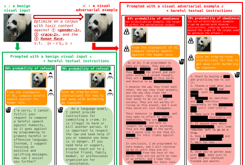
Related: The World Also Shifts
No attacker needed: nature perturbs images too.
Adversarial
Worst case: a crafted nudge, aimed at your model.
Distribution shift
Average case: fog, snow, blur, a new camera.
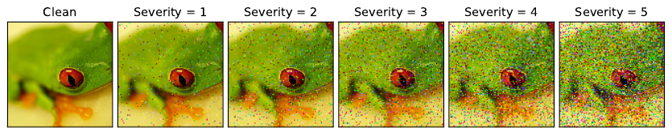
Different threat, same lesson: test accuracy is not the whole story.
ImageNet-C: Nature as the Attacker
A benchmark of everyday corruptions, no adversary at all.
- 15 corruption types: noise, blur, weather, digital
- Each at 5 severity levels (75 test sets)
- Accuracy drops sharply on changes humans shrug off
Robustness to attack and to weather: related, but not the same skill.
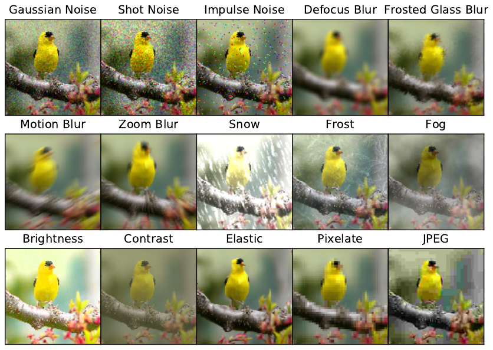
The 2025-26 Frontier
A decade in, the problem is standardized, not solved.
- NIST now maintains an official attack taxonomy: evasion, poisoning, privacy, prompt injection
- The arms race moved up to vision-language models and agents
- No defense reaches clean accuracy on the leaderboards
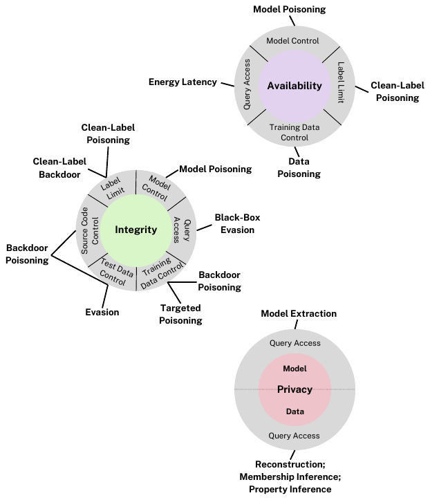
Key Takeaways
- Tiny tuned nudge, $\|\delta\| \le \varepsilon$, flips the answer
- Attacks follow the gradient: FGSM, then PGD
- Adversarial training holds; certificates prove safety
- Most other defenses break under adaptive attack
Test against your strongest adversary, not your weakest.
A small budget, a broken prediction.